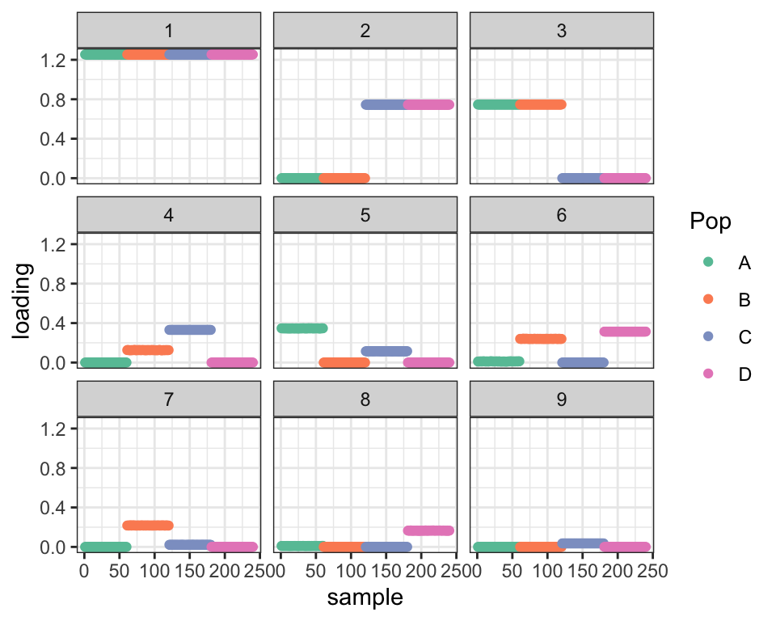
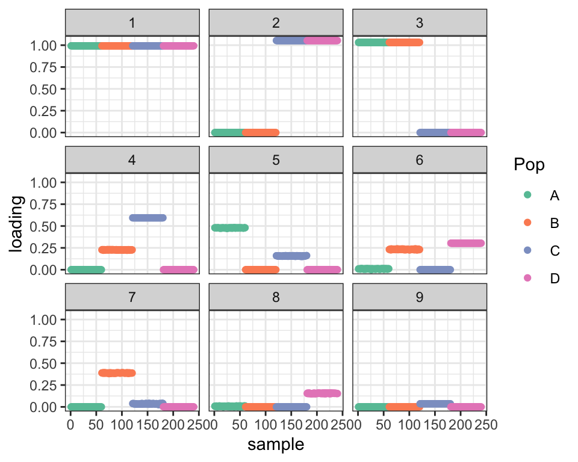
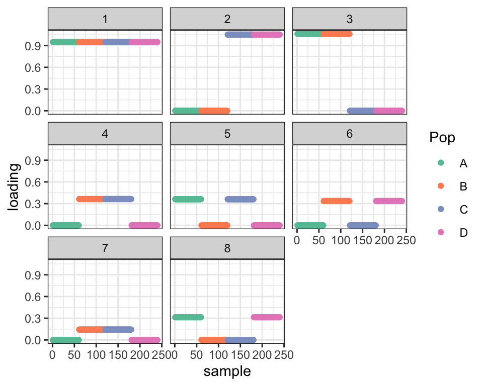
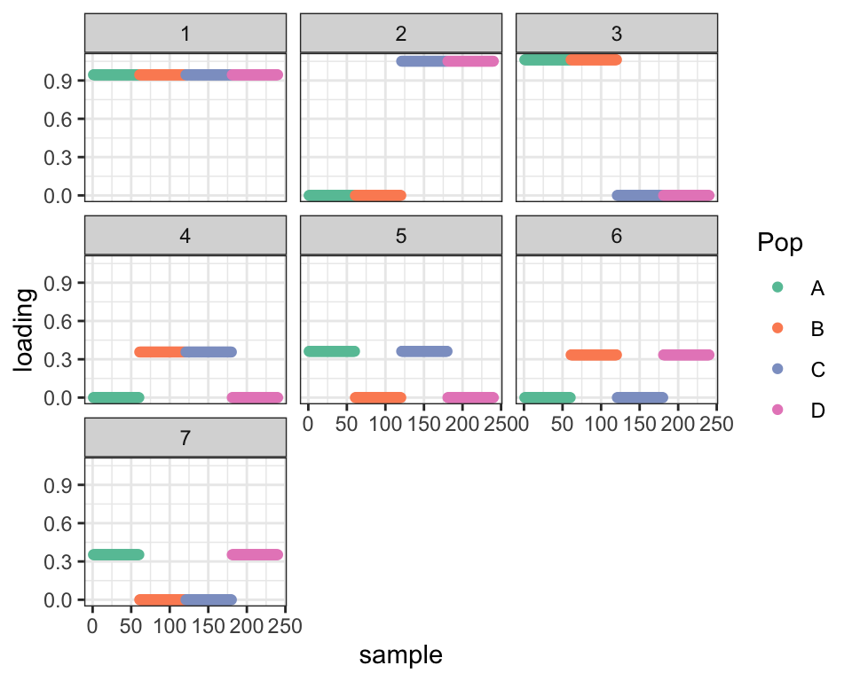
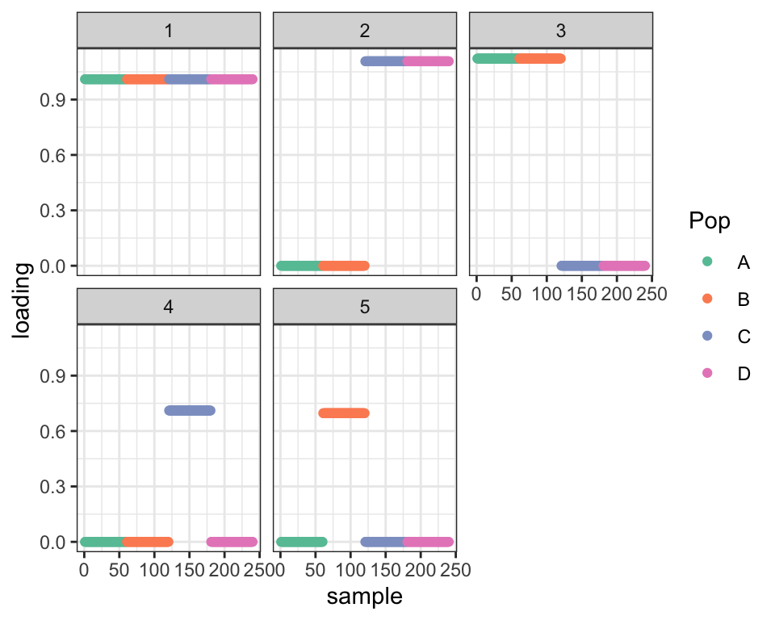
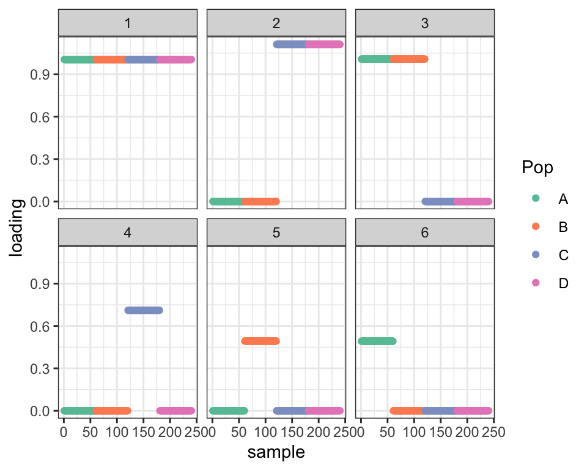
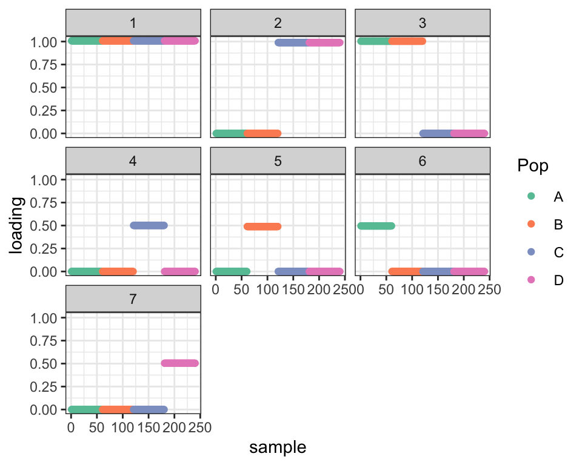

Strategies for adjusting drift fits
Jason Willwerscheid
6/5/2020
Last updated: 2020-06-06
Checks: 6 0
Knit directory: drift-workflow/analysis/
This reproducible R Markdown analysis was created with workflowr (version 1.2.0). The Report tab describes the reproducibility checks that were applied when the results were created. The Past versions tab lists the development history.
Great! Since the R Markdown file has been committed to the Git repository, you know the exact version of the code that produced these results.
Great job! The global environment was empty. Objects defined in the global environment can affect the analysis in your R Markdown file in unknown ways. For reproduciblity it’s best to always run the code in an empty environment.
The command set.seed(20190211) was run prior to running the code in the R Markdown file. Setting a seed ensures that any results that rely on randomness, e.g. subsampling or permutations, are reproducible.
Great job! Recording the operating system, R version, and package versions is critical for reproducibility.
Nice! There were no cached chunks for this analysis, so you can be confident that you successfully produced the results during this run.
Great! You are using Git for version control. Tracking code development and connecting the code version to the results is critical for reproducibility. The version displayed above was the version of the Git repository at the time these results were generated.
Note that you need to be careful to ensure that all relevant files for the analysis have been committed to Git prior to generating the results (you can use wflow_publish or wflow_git_commit). workflowr only checks the R Markdown file, but you know if there are other scripts or data files that it depends on. Below is the status of the Git repository when the results were generated:
Ignored files:
Ignored: .DS_Store
Ignored: .Rhistory
Ignored: .Rproj.user/
Ignored: docs/.DS_Store
Ignored: docs/assets/.DS_Store
Ignored: output/
Untracked files:
Untracked: tmp1.R
Untracked: tmp2.R
Untracked: tmp3.R
Unstaged changes:
Modified: analysis/AmericanAdmixture_4B11_fix.Rmd
Modified: drift-workflow.Rproj
Note that any generated files, e.g. HTML, png, CSS, etc., are not included in this status report because it is ok for generated content to have uncommitted changes.
These are the previous versions of the R Markdown and HTML files. If you’ve configured a remote Git repository (see ?wflow_git_remote), click on the hyperlinks in the table below to view them.
| File | Version | Author | Date | Message |
|---|---|---|---|---|
| Rmd | c135d58 | Jason Willwerscheid | 2020-06-06 | wflow_publish(“analysis/tree_adjust.Rmd”) |
suppressMessages({
library(flashier)
library(drift.alpha)
library(tidyverse)
})Introduction
We’ve found that drift often gets stuck in local optima. To see why, write \[ Y = LF^T + E = (LA)(FB)^T + E \] If \(AB^T = I\) and both \(A\) and \(LA\) are reasonably bimodal, then it’s difficult to see how drift would be able to navigate from one solution to the other.
In this analysis (and others to follow) I’ll look at ways to jump from one optimum to another. My hope is that there are a small number of “moves” that one can make to get from one fit to another, and that one can choose the best fit by trying moves and comparing ELBOs.
I simplify things by simulating a dataset where the drift model is exact. The tree representation of the data is as follows:

So, individuals from population \(A\) have data distributed \(N(a + b + d, \sigma_r^2 I_p)\), population \(B\) is \(N(a + b + e, \sigma_r^2 I_p)\), and so on. Each edge \(a\) through \(g\) represents effects that are normally distributed with mean zero: \(a \sim N(0, \sigma_a^2 I_p)\), etc. I use parameter values \(p = 10000\), \(\sigma_a^2 = \sigma_b^2 = \sigma_c^2 = 1\), \(\sigma_d^2 = \sigma_e^2 = \sigma_f^2 = \sigma_g^2 = 0.25\), and \(\sigma_r^2 = 0.01\). I simulate data for 60 individuals per population.
set.seed(666)
n_per_pop <- 60
p <- 10000
a <- rnorm(p)
b <- rnorm(p)
c <- rnorm(p)
d <- rnorm(p, sd = 0.5)
e <- rnorm(p, sd = 0.5)
f <- rnorm(p, sd = 0.5)
g <- rnorm(p, sd = 0.5)
popA <- c(rep(1, n_per_pop), rep(0, 3 * n_per_pop))
popB <- c(rep(0, n_per_pop), rep(1, n_per_pop), rep(0, 2 * n_per_pop))
popC <- c(rep(0, 2 * n_per_pop), rep(1, n_per_pop), rep(0, n_per_pop))
popD <- c(rep(0, 3 * n_per_pop), rep(1, n_per_pop))
Y <- cbind(popA, popB, popC, popD) %*% rbind(a + b + d, a + b + e, a + c + f, a + c + g)
Y <- Y + rnorm(4 * n_per_pop * p, sd = 0.1)
plot_dr <- function(dr) {
sd <- sqrt(dr$prior_s2)
L <- dr$EL
LDsqrt <- L %*% diag(sd)
K <- ncol(LDsqrt)
plot_loadings(LDsqrt[,1:K], rep(c("A", "B", "C", "D"), each = n_per_pop)) +
scale_color_brewer(palette="Set2")
}Default drift fit
First I show the “greedy” fit obtained by flashier, which is the default initialization method for drift.
greedy <- init_from_data(Y)
plot_dr(greedy)
It seems like it should be possible to get from here to the fit we want: shrink the Factor 4 loadings for population B and the Factor 5 loadings for population C and then remove Factor 6. But drift doesn’t quite find this solution. I ran it for 100 iterations here, but running it longer doesn’t change things much more:
dr_default <- drift(greedy, verbose = FALSE)
plot_dr(dr_default)
This is a problem with the optimization and not with the model. If I initialize using the “true” factors, I get a better ELBO:
dr_true <- init_from_EL(Y,
cbind(popA + popB + popC + popD,
popA + popB, popC + popD,
popA, popB, popC, popD),
cbind(a, b, c, d, e, f, g))
dr_true <- drift(dr_true, miniter = 2, verbose = FALSE)
cat("Optimal ELBO (true factors):", dr_true$elbo,
"\nDefault fit ELBO: ", dr_default$elbo,
"\nDifference: ", dr_true$elbo - dr_default$elbo, "\n")#> Optimal ELBO (true factors): 1946805
#> Default fit ELBO: 1944695
#> Difference: 2109.401Idea 1: Initialize using two-pointmass priors
Throughout this analysis, I’ll heavily abuse the fact that the data is structured like a tree (with no admixture). I’ll re-evaluate using an additional admixed population in a subsequent analysis.
So, given that the data is structured like a tree, it makes sense to re-run drift using two-pointmass priors rather than the more general family of bimodal priors. Results are still very unbecoming of a tree, but the ELBO is much higher and the fact that the (unscaled) expected loadings are all zeros and ones will make adjustments easier.
dr_2pm <- drift(init_from_data(Y, pm = TRUE), verbose = FALSE)
plot_dr(dr_2pm)
cat("Difference in ELBO from optimal:", dr_true$elbo - dr_2pm$elbo, "\n")#> Difference in ELBO from optimal: 302.4329Idea 2: Remove redundant factors
Factors 4 and 7 from the two-pointmass fit are clearly redundant. This kind of problem would be easy to spot algorithmically just by checking the covariance of the expected loadings. Here, I’ll just remove Factor 7 manually and re-fit. The ELBO improves as a result.
# Keep k1; remove k2
remove_factor <- function(dr, k1, k2, maxiter = 100) {
dr <- within(dr, {
K <- K - 1
EL <- EL[, -k2]
EL2 <- EL2[, -k2]
EF[, k1] <- EF[, k1] + EF[, k2]
EF2[, k1] <- EF2[, k1] + EF2[, k2]
EF <- EF[, -k2]
EF2 <- EF2[, -k2]
CovF <- CovF[-k2, -k2]
wt_avg_CovF <- wt_avg_CovF[-k2, -k2]
prior_s2[k1] <- prior_s2[k1] + prior_s2[k2]
prior_s2 <- prior_s2[-k2]
KL_l <- KL_l[-k2]
fitted_g <- fitted_g[-k2]
ebnm_fn <- ebnm_fn[-k2]
})
return(drift(dr, miniter = 10, maxiter = maxiter, verbose = FALSE))
}
dr_pruned <- remove_factor(dr_2pm, 4, 7)
cat("Difference in ELBO from optimal:", dr_true$elbo - dr_pruned$elbo, "\n")#> Difference in ELBO from optimal: 125.453plot_dr(dr_pruned) 
Idea 3: Force factors into a tree-like structure
Clearly, the problems begin when Factor 4 is added. Factors 2 and 3 split the overall population into two groups (A + B and C + D) and are easily interpreted as the earliest branching of the tree. But Factor 4 combines the next two splits (between A and B and between C and D).
To avoid this kind of thing, I impose restrictions on each new \(k\)th factor. Consider the set of new loadings that are equal to one (i.e., the set of individuals that experienced the drift event represented by the new factor). To be easily interpretable as an edge in a tree, this set must be either a subset of or have no elements in common with each previous set of individuals. That is, for each \(j < k\), it must be true (in a suitably approximate sense) that either \[ L_j^T L_k = 0 \] or \[ L_j^T L_k = L_k^T L_k \] If this condition doesn’t obtain, then I split the \(k\)th factor up. Namely, for each \(j'\) such that \(L_{j'}^T L_k \ne 0\) and \(L_{j'}^T L_k \ne L_k^T L_k\), I create a new factor with loadings \[ L_{j'} \odot L_k \] What this does is to take the intersection of the \(k\)th set of individuals with the \(j'\)th set. If necessary, I also add a factor \[ L_k - \sum_{j'} L_{j'} \odot L_k \] so that \(F_k\) can simply be duplicated for each new factor. Here’s what happens when I fit a four-factor drift fit and then split up the fourth factor as described:
dr_3fac <- drift(init_from_data(Y, pm = TRUE, Kmax = 3), verbose = FALSE)
split_last_factor <- function(dr, maxiter = 100) {
cp <- crossprod(dr$EL)[, dr$K]
kset <- which(cp > 0.5 & cp < max(cp) - 0.5)
new_EL <- dr$EL[, kset] * dr$EL[, dr$K]
old_CovF <- dr$CovF
old_wtCovF <- dr$wt_avg_CovF
dr <- within(dr, {
EL <- cbind(EL[, -K], new_EL)
EL2 <- cbind(EL2[, -K], new_EL^2)
CovF <- diag(rep(1, ncol(EL)))
wt_avg_CovF <- diag(rep(1, ncol(EL)))
CovF[1:K, 1:K] <- old_CovF
wt_avg_CovF[1:K, 1:K] <- old_wtCovF
for (i in 1:(length(kset) - 1)) {
EF <- cbind(EF, EF[, K])
EF2 <- cbind(EF2, EF2[, K])
prior_s2 <- c(prior_s2, prior_s2[K])
KL_l <- c(KL_l, KL_l[K])
fitted_g <- c(fitted_g, fitted_g[K])
ebnm_fn <- c(ebnm_fn, ebnm_fn[K])
}
K <- K - 1 + ncol(new_EL)
})
return(drift(dr, miniter = 10, maxiter = maxiter, verbose = FALSE))
}
dr_split <- split_last_factor(dr_3fac)
cat("ELBO before split: ", dr_3fac$elbo,
"\nELBO after split: ", dr_split$elbo,
"\nDifference from optimal:", dr_true$elbo - dr_split$elbo, "\n")#> ELBO before split: -349223.3
#> ELBO after split: 1946339
#> Difference from optimal: 466.0111plot_dr(dr_split)
Not only is the fit hugely improved, but we’ve already recovered the essential structure of the true tree.
Idea 4: Shift the edges around
One discrepancy remains: to get the true tree from these loadings, it’s necessary to retrace some edges (namely, the edges corresponding to effects \(d\) and \(g\)):
I attempted to add another factor using the “greedy” flash method, but it didn’t take. What I’d like to do instead is to add a sixth factor that represents the overlapping part of factors 2 and 4, and a seventh factor to clean up factors 3 and 5. For each of these transformations, I want to find a matrix \(A\) such that \(LA\) gives the new loadings. I’ll also need a matrix \(B\) such that \(AB^T = I\) to get the new factors \(FB\).
The new sixth factor will be composed of some proportion of factor 2 and some proportion of factor 4, but factor 4 traces it in the opposite direction. Thus I want to set \[ F_6 := \alpha F_2 - \beta F_4 \] for some \(0 < \alpha < 1\), \(0 < \beta < 1\). The new factors \(F_2\) and \(F_4\) will be \[ F_2^{new} := (1 - \alpha) F_2 + \beta F_4,\ F_4^{new} := (1 - \beta) F_4 + \alpha F_2 \]
This family of transformations is given in matrix form as \[ B = \left[\begin{array} {rrrrrr} 1 & 0 & 0 & 0 & 0 & 0 \\ 0 & 1 - \alpha & 0 & \alpha & 0 & \alpha \\ 0 & 0 & 1 & 0 & 0 & 0 \\ 0 & \beta & 0 & 1 - \beta & 0 & -\beta \\ 0 & 0 & 0 & 0 & 1 & 0 \\ \end{array}\right] \]
Since the individuals that experience the drift event corresponding to the new sixth factor are those that experience 2 but not 4, the transformation \(A\) can be seen as “subtracting” the individuals corresponding to Factor 4 from those corresponding to Factor 2:
\[ A = \left[\begin{array} {rrrrrr} 1 & 0 & 0 & 0 & 0 & 0 \\ 0 & 1 & 0 & 0 & 0 & 1 \\ 0 & 0 & 1 & 0 & 0 & 0 \\ 0 & 0 & 0 & 1 & 0 & -1 \\ 0 & 0 & 0 & 0 & 1 & 0 \\ \end{array}\right] \]
It can be checked that \(AB^T = I\), as required. To choose \(\alpha\) and \(\beta\), I note that the sum of squares of \(F_k\) is proportional to \(\sigma_k^2\), the magnitude of the \(k\)th drift event. The best fit should minimize the (weighted) total amount of drift \(\sum_{k \in \{2, 4, 6\}} w_kF_k^TF_k\). It might be a good idea to weight the factors according to the number of individuals who experience the drift event \(\| L_k \|_1\), but for simplicity I set \(w_k = 1\) for all \(k\). This yields optimal parameters \(\alpha = \beta = \frac{1}{3}\). This choice of \(w_k\) also gives a simple way to find candidates \(F_i\) and \(F_j\) on which to try out this transformation: just choose the ones that yield the largest reduction in the overall sum of squares \(\sum_k F_k^T F_k\).
For the following two “shifts,” I choose the transformation algorithmically:
shift_mat <- function(dr) {
# Which i and j give valid new factors?
elig <- matrix(0, nrow = ncol(dr$EL), ncol = ncol(dr$EL))
for (i in 1:nrow(elig)) {
for (j in 1:nrow(elig)) {
new_col = dr$EL[, i] - dr$EL[, j]
# Check that it has values between 0 and 1:
if (i != j & min(new_col) > -0.1) {
# Check that it's not already there:
if (min(apply(dr$EL - new_col, 2, function(x) max(abs(x)))) > 0.1) {
elig[i, j] <- 1
}
}
}
}
# Calculate the reduction in the sum of squares for each i and j:
FtF <- crossprod(dr$EF)
diag(FtF) <- -diag(FtF)
SS_reduc <- matrix(0, nrow = nrow(FtF), ncol = ncol(FtF))
for (i in 1:(nrow(FtF) - 1)) {
for (j in (i + 1):nrow(FtF)) {
SS_reduc[i, j] <- SS_reduc[j, i] <- -sum(FtF[c(i, j), c(i, j)]) / 3
}
}
SS_reduc <- SS_reduc * elig
i <- row(SS_reduc)[which.max(SS_reduc)]
j <- col(SS_reduc)[which.max(SS_reduc)]
cat("Subtracting factor", j, "from factor", i, "...\n")
Anew <- rep(0, ncol(dr$EF))
Anew[i] <- 1
Anew[j] <- -1
A <- cbind(diag(rep(1, ncol(dr$EF))), Anew)
Bdiag <- rep(1, ncol(dr$EF))
Bnew <- rep(0, ncol(dr$EF))
Bdiag[i] <- Bdiag[j] <- 2/3
Bnew[i] <- 1/3
Bnew[j] <- -1/3
B <- rbind(diag(Bdiag), Bnew)
B[i, j] <- 1/3
B[j, i] <- 1/3
return(list(A = A, B = B))
}
try_shift <- function(dr, maxiter = 100) {
shft <- shift_mat(dr)
dr <- init_from_EL(Y, dr$EL %*% shft$A, dr$EF %*% t(shft$B))
dr <- drift(dr, miniter = 2, maxiter = maxiter, verbose = FALSE)
}
dr_shift1 <- try_shift(dr_split)#> Subtracting factor 5 from factor 3 ...dr_shift2 <- try_shift(dr_shift1)#> Subtracting factor 4 from factor 2 ...
cat("Difference in ELBO from optimal before shifts: ", dr_true$elbo - dr_split$elbo,
"\nDifference in ELBO from optimal after first shift: ", dr_true$elbo - dr_shift1$elbo,
"\nDifference in ELBO from optimal after second shift:", dr_true$elbo - dr_shift2$elbo, "\n")#> Difference in ELBO from optimal before shifts: 466.0111
#> Difference in ELBO from optimal after first shift: 247.9496
#> Difference in ELBO from optimal after second shift: 0.04425617
plot_dr(dr_shift1)
plot_dr(dr_shift2)
So two shifts gives us the true tree and the optimal ELBO. Nice!
This process also stops at the correct time: a third attempt to shift makes the fit worse.
dr_shift3 <- try_shift(dr_shift2)#> Subtracting factor 7 from factor 1 ...cat("Difference in ELBO from optimal after third shift:", dr_true$elbo - dr_shift3$elbo, "\n")#> Difference in ELBO from optimal after third shift: 140.7487Conclusion
I showed that the correct tree can be recovered as follows: initialize using two-pointmass priors, checking after each factor has been added to ensure that the loadings are interpretable as a tree; if not, split the factor up. Once factors can no longer be added using the “greedy” method, shift the edges around until the ELBO ceases to improve. In the next analysis, I’ll see whether this strategy works when a fifth admixed population is also present.
sessionInfo()#> R version 3.5.3 (2019-03-11)
#> Platform: x86_64-apple-darwin15.6.0 (64-bit)
#> Running under: macOS Mojave 10.14.6
#>
#> Matrix products: default
#> BLAS: /Library/Frameworks/R.framework/Versions/3.5/Resources/lib/libRblas.0.dylib
#> LAPACK: /Library/Frameworks/R.framework/Versions/3.5/Resources/lib/libRlapack.dylib
#>
#> locale:
#> [1] en_US.UTF-8/en_US.UTF-8/en_US.UTF-8/C/en_US.UTF-8/en_US.UTF-8
#>
#> attached base packages:
#> [1] stats graphics grDevices utils datasets methods base
#>
#> other attached packages:
#> [1] forcats_0.4.0 stringr_1.4.0 dplyr_0.8.0.1
#> [4] purrr_0.3.2 readr_1.3.1 tidyr_0.8.3
#> [7] tibble_2.1.1 ggplot2_3.2.0 tidyverse_1.2.1
#> [10] drift.alpha_0.0.9 flashier_0.2.4
#>
#> loaded via a namespace (and not attached):
#> [1] Rcpp_1.0.4.6 lubridate_1.7.4 invgamma_1.1
#> [4] lattice_0.20-38 assertthat_0.2.1 rprojroot_1.3-2
#> [7] digest_0.6.18 truncnorm_1.0-8 R6_2.4.0
#> [10] cellranger_1.1.0 plyr_1.8.4 backports_1.1.3
#> [13] evaluate_0.13 httr_1.4.0 pillar_1.3.1
#> [16] rlang_0.4.2 lazyeval_0.2.2 readxl_1.3.1
#> [19] rstudioapi_0.10 ebnm_0.1-21 irlba_2.3.3
#> [22] whisker_0.3-2 Matrix_1.2-15 rmarkdown_1.12
#> [25] labeling_0.3 munsell_0.5.0 mixsqp_0.3-40
#> [28] broom_0.5.1 compiler_3.5.3 modelr_0.1.5
#> [31] xfun_0.6 pkgconfig_2.0.2 SQUAREM_2017.10-1
#> [34] htmltools_0.3.6 tidyselect_0.2.5 workflowr_1.2.0
#> [37] withr_2.1.2 crayon_1.3.4 grid_3.5.3
#> [40] nlme_3.1-137 jsonlite_1.6 gtable_0.3.0
#> [43] git2r_0.25.2 magrittr_1.5 scales_1.0.0
#> [46] cli_1.1.0 stringi_1.4.3 reshape2_1.4.3
#> [49] fs_1.2.7 xml2_1.2.0 generics_0.0.2
#> [52] RColorBrewer_1.1-2 tools_3.5.3 glue_1.3.1
#> [55] hms_0.4.2 parallel_3.5.3 yaml_2.2.0
#> [58] colorspace_1.4-1 ashr_2.2-50 rvest_0.3.4
#> [61] knitr_1.22 haven_2.1.1